Published: 2022-07-14
Original link: https://www.cnphotos.net/academy/show-70.html
"Poetic Jiangnan, vibrant Zhejiang" sings a new song of "artistic rural development." To push this work across the province, the provincial federation of literary and art circles recently compiled the book "Model Villages of Artistic Rural Development in Zhejiang Province."
The "Zhejiang Arts" WeChat account will introduce the first batch of model towns and villages for artistic rural development in our province. In this issue, we visit Guyan Huaxiang in Lishui, a place of beautiful mountains, waters, and art. We see how it paints a poetic, good life for the new era.
Guyan Huaxiang sits in Dagangtou Town, Liandu District, Lishui, 20 km from the city center. It has stunning, picture-perfect mountains and waters, and a world-class intact irrigation heritage. It is also the birthplace of the "Lishui Barbizon" oil painting group, a base of the "hometown of photography in China," an outdoor painting base of the China Artists Association, one of the first national special towns, one of the first national model bases for rural tourism makers, and a most beautiful nostalgic art town in China. It is further a first-batch model site for cultural building of special towns in Zhejiang, and an excellent Zhejiang special town under development.
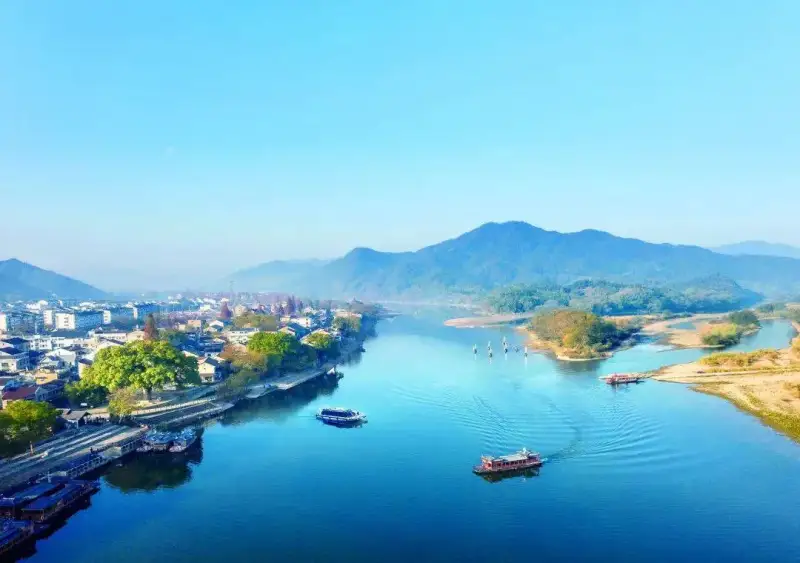
▲ Guyan Huaxiang
Guyan Huaxiang follows its development focus of "three towns in one": an art town, a cultural-tourism town, and a living town. It carries out "artistic rural development" and works out a new path. The path moves step by step from landscape, to art, to cultural tourism, to life, to industry. It boosts rural revitalization and leads to common prosperity.
Over the last three years, the town has drawn an average of 1.28 million visitors a year, with average annual revenue of 15.63 million yuan. In ten years, it has raised the per-capita income of nearby villagers tenfold.
Use art spaces as building blocks to shape a three-dimensional art town
Guyan Huaxiang takes the 30-plus-year history of the "Lishui Barbizon" oil painting movement as its backbone. It centers on real mountains and real waters, and uses painting as a medium to shape a unique art and cultural-tourism town.
Art has beautified Guyan Huaxiang. Today, the old and new parts of the town form an art ecosystem. It joins an outdoor painting base, an art creation street, a gallery street, and an art leisure resort. Tradition and modern life, art and daily life, grow together.
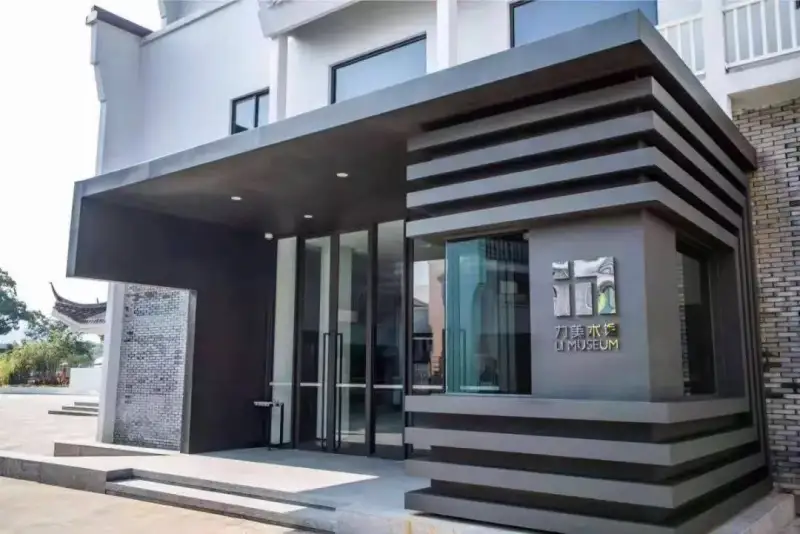
▲ Li Gallery, Guyan Huaxiang
Beyond painting, Guyan Huaxiang uses its native strength as a photography town. It draws on its role as host of an international photography festival and the China Photography Museum to build a provincial-level photography town.
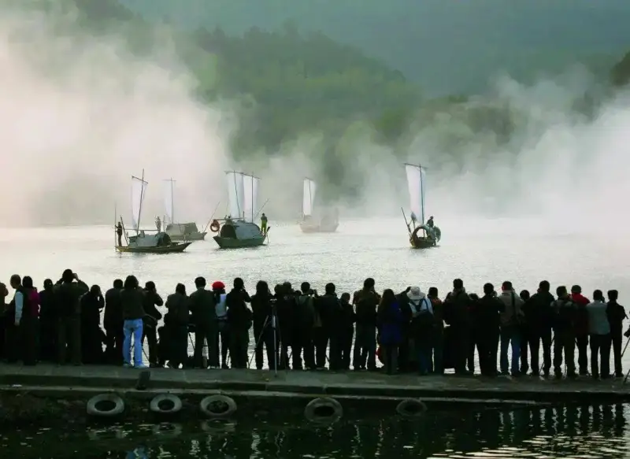
▲ "Sails on the Ou River" photo shoot during the Lishui Photography Festival
Today, the Guyan Huaxiang Art Center and a new cultural industry district are under construction. They will open up more room for the town's future.
Now 126 art studios and galleries have settled in Guyan Huaxiang. The annual output value of oil painting reaches 120 million yuan. Nearly 300 colleges across the country have set up art education practice bases here, and the town hosts over 150,000 outdoor painters and creators a year.
Use art events as the soul to spark the town's artistic energy
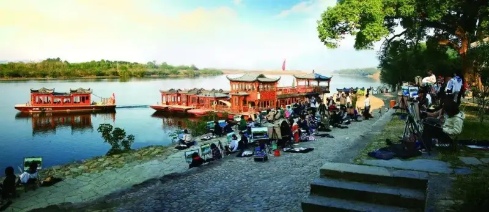
▲ Outdoor painting at Guyan Huaxiang
Since 2006, Guyan Huaxiang has used art events to spark its artistic energy. Since 2008, it has held six editions of the "Guyan Huaxiang Masters' Outdoor Painting Tour," which raised its art profile.
After it earned the 4A scenic spot rating, its art events gave the town a higher level of influence.
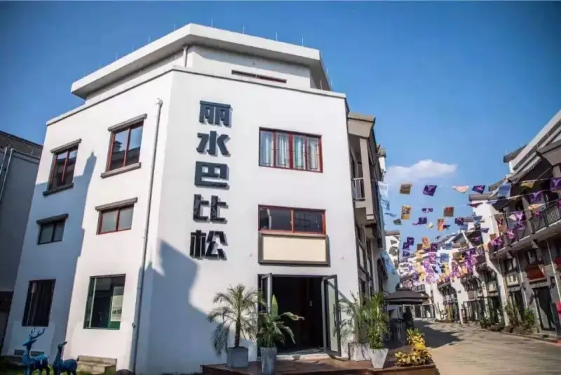
▲ Art park at Guyan Huaxiang
The 2016 China Outdoor Painting Congress opened a cross-cultural dialogue between East and West on "shanshan (mountains-and-waters) and landscape." From 2017 to 2020, the Guyan Huaxiang Town Art Festival opened a broad, popular view that ran from art to cultural-tourism life.
Starting in 2018, a series of high-end art seminars around the "Lishui Barbizon" shaped a vivid local cultural landscape. The "Guyan Huaxiang: Overseas Promotion Exhibition of Zhejiang Special Towns" appeared at the China Cultural Center in Paris and drew high international attention.
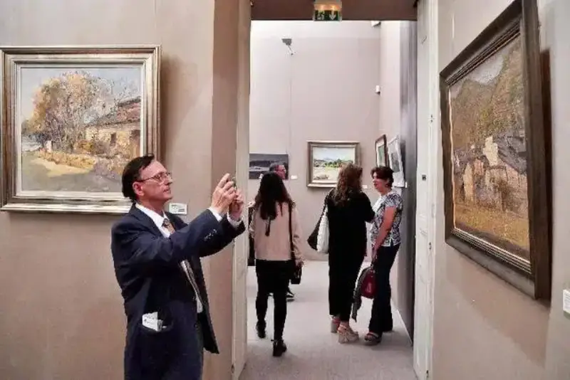
▲ The "Guyan Huaxiang: Overseas Promotion Exhibition of Zhejiang Special Towns" in Paris
The successful 2019 "Lishui Barbizon International Symposium" was an academic review of how art became public after decades of growth between Guyan Huaxiang and the Lishui Barbizon group.
In 2021, it held the first "Guyan Huaxiang National Landscape Oil Painting Biennale." It also signed a deal with the China Artists Association for five shows over ten years, to build a national art partnership platform.
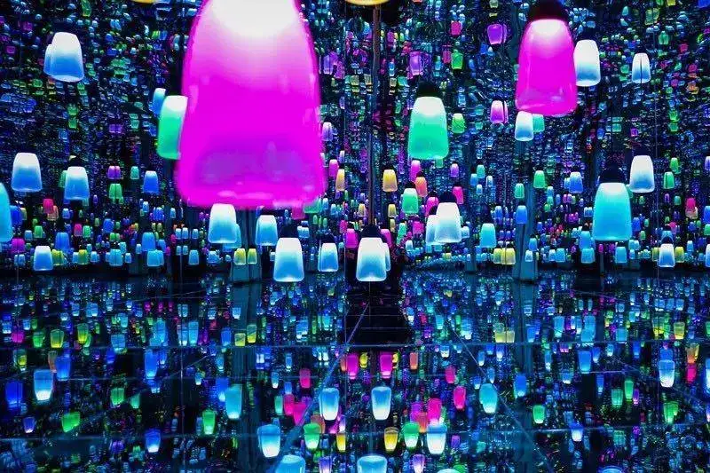
▲ Dreamy Barbizon Starry Sky Experience Hall
These ever-upgrading art events spark endless artistic growth in Guyan Huaxiang. It has become the most watched art and cultural-tourism town in recent years.
Art in daily life, and daily life made artistic, are now the real scene of Guyan Huaxiang. The town is becoming a place that more artists, makers, returned overseas Chinese, and lovers of Song-dynasty charm and Chinese style want to live in.
From production to life: the art village is the living village
Since 2006, Guyan Huaxiang has drawn professional painters from inside and outside the province. After more than ten years, the painters who came with start-up dreams have settled into the town's life as cultural tourism grew.
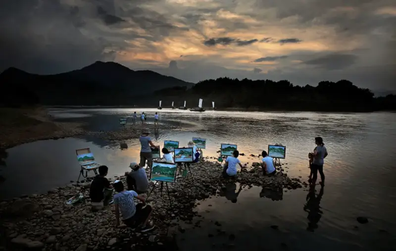
▲ Artists come to paint outdoors at Guyan Huaxiang
Today these painters have become new residents of Guyan Huaxiang. Painting, creating, living, and joining the building of a beautiful countryside are now part of their daily life. Their way of life has become a new sight for visitors. It also draws more "life aesthetes" to come live and create here.
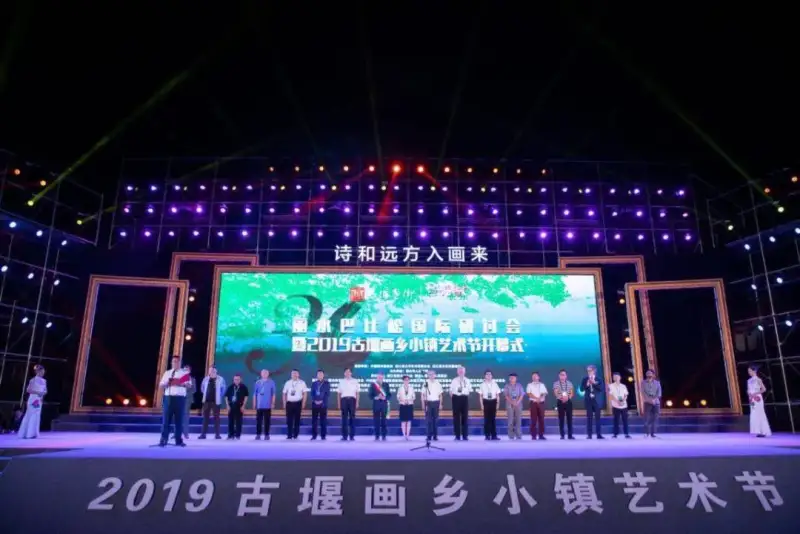
▲ 2019 Guyan Huaxiang Town Art Festival
In May 2019, Art Zone No. 1 of Guyan Huaxiang opened. It marked a new stage for the town.
New policies have drawn more artists and art institutions. The oil painting association, the guesthouse alliance, and the cultural-creative alliance now exist. Guyan Huaxiang has become a community where art, cultural tourism, and life meet.
A lifestyle that is an industry: new life drives new production
Guyan Huaxiang has moved from an art village, to a cultural-tourism village, to a living village. The new life has also created new soil for production.
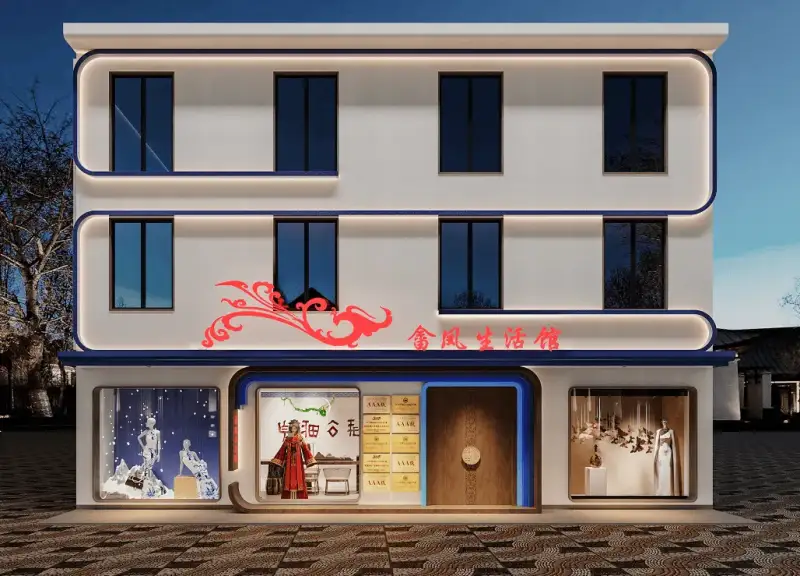
▲ She Feng Design Art Life Store
Today visitors still see the beautiful mountains, waters, and art. In the old street, the new district, and the town center, they also see the "art life stores" run by the new residents of Guyan Huaxiang. Examples include the fine-art Bolan Contemporary Art Life Store, the design and cultural-creative She Feng Design Art Life Store, the handmade Yimojia Fabric Life Store, and the guesthouse-style Milena Art Aroma Life Store.
As people walk through these art life stores, they feel the pull of art and the energy of innovation. They also see the model of common prosperity at work in Guyan Huaxiang.
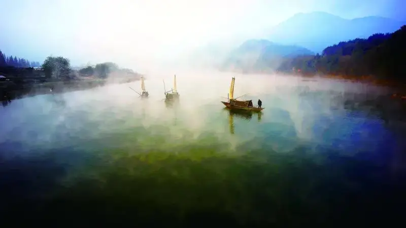
▲ Sails on the old town river
The landscape drew art. Art promoted cultural tourism. Cultural tourism created a new life. The new life hatched new industry.
Under the banner of "artistic rural development," Guyan Huaxiang is using "a way of life as an industry" to paint, through art, a poetic and good life for the new era.
Contributed by: Liandu District Federation of Literary and Art Circles, Lishui
Editor: Zhu Rongrong
Reviewed by: Chen Wenqi, Mao Xiaoqing